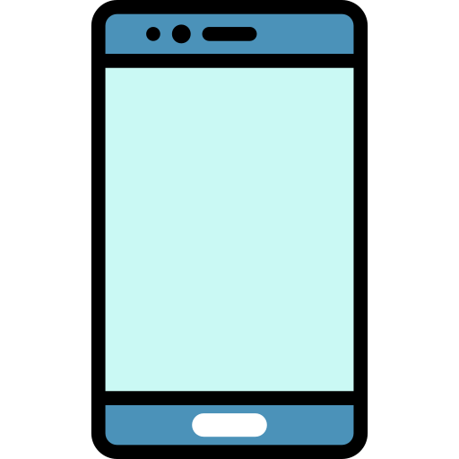

¿Ya tienes una cuenta? Iniciar sesión

Customiza tu perfil
Ingresa al menú de tu perfil y personaliza bien tus intereses y habilidades
Forma parte de proyectos
Puedes interactuar con otras personas en otros proyectos para ayudarlos
Encuentra trabajo rápidamente
Busca las mejores ofertas laborales del mercado